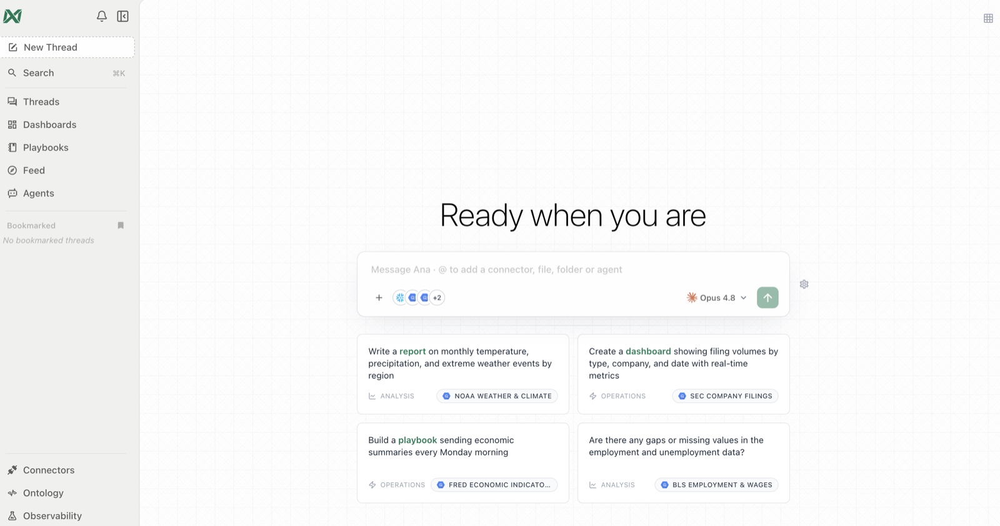
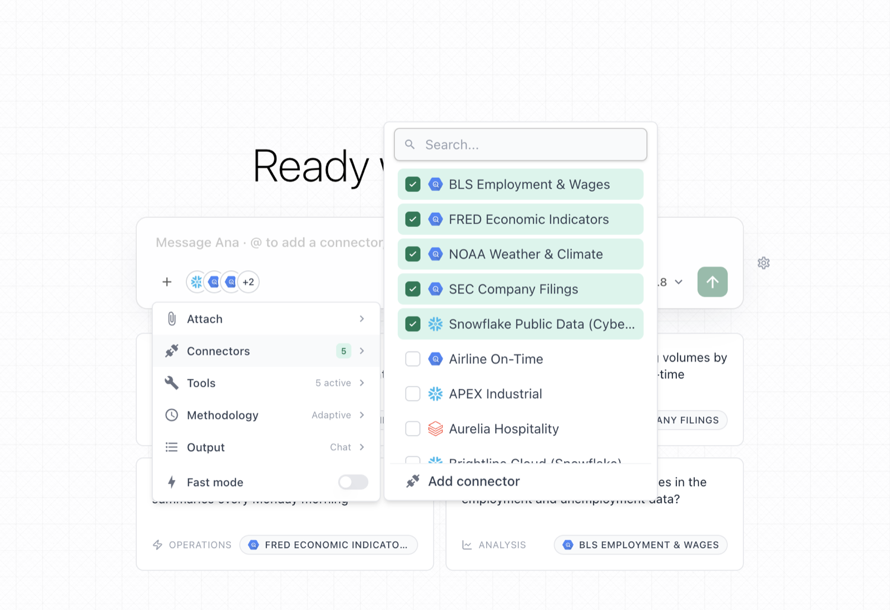
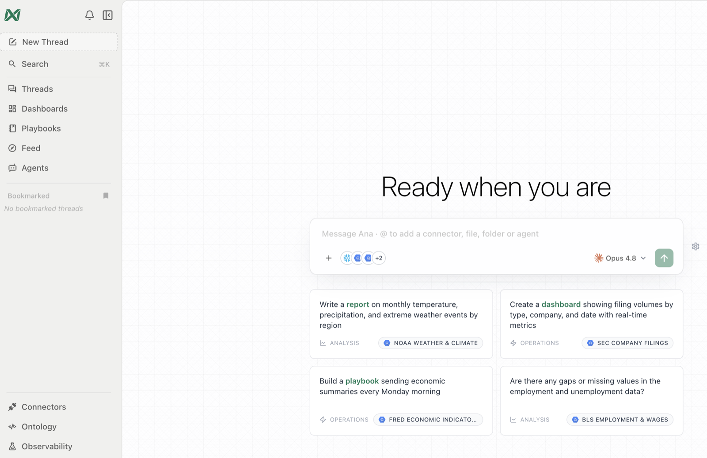
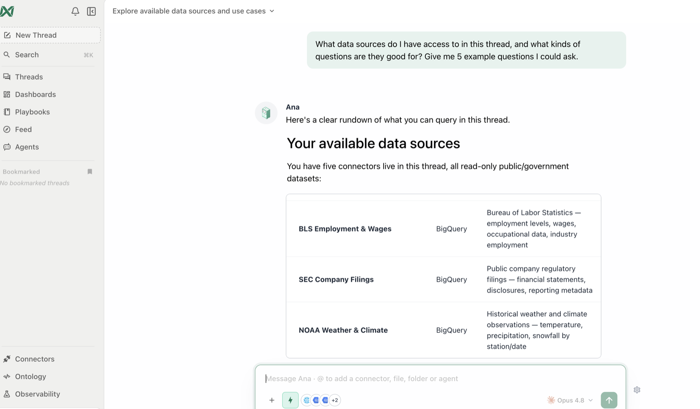
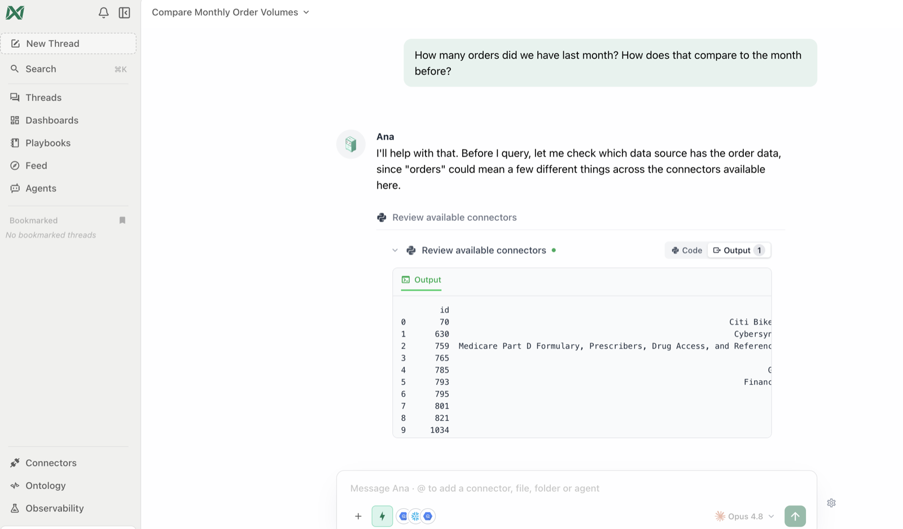
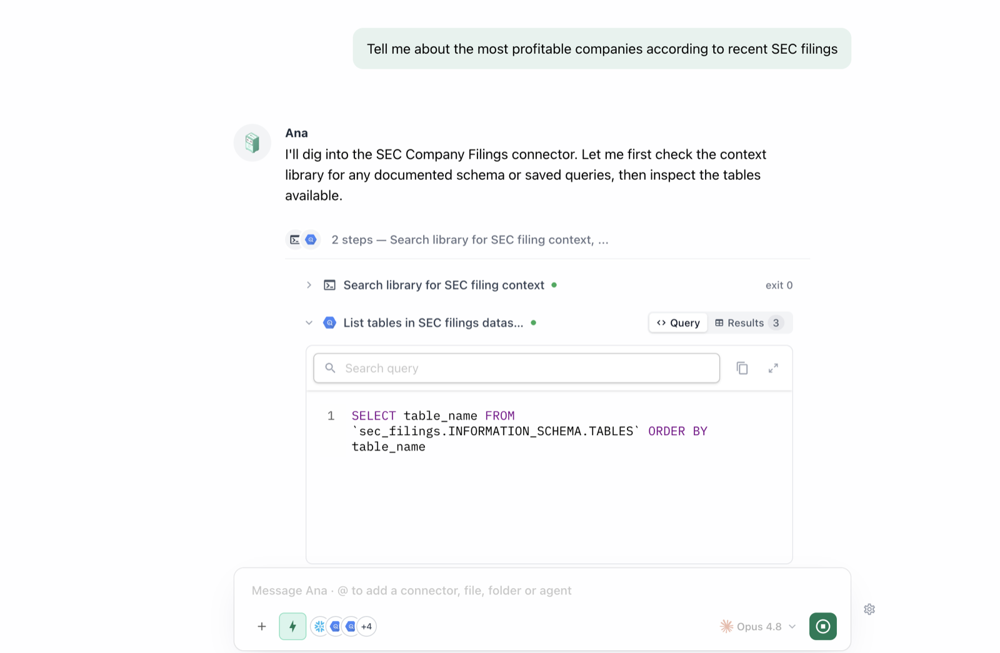
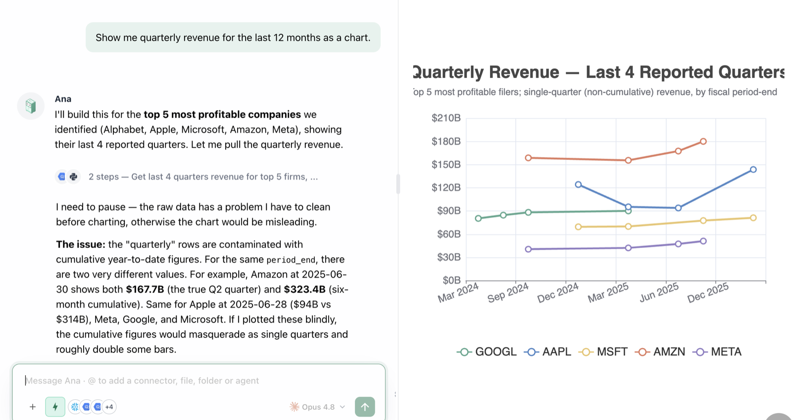
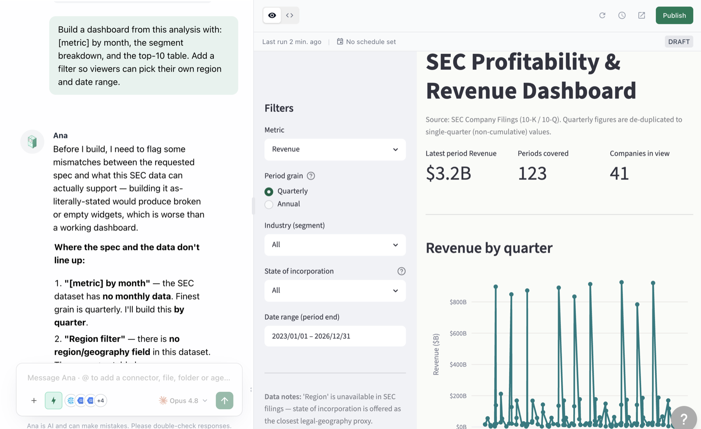
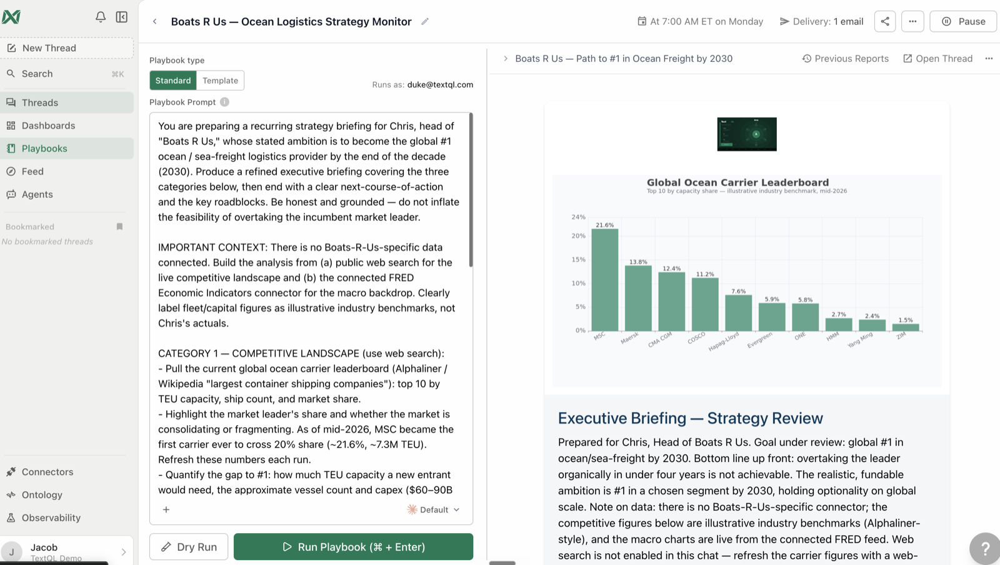

Self-Service Analytics
A hands-on workshop that teaches business users — no SQL, no data engineering background — how to answer their own questions, build their own charts and dashboards, and automate their own reporting with TextQL's analytics agent, Ana.
It runs as short, hands-on modules, each with a goal, copy-paste prompts, what you'll see, and a checkpoint before moving on.
What you'll be able to do
Ask in plain English
Real business questions, refined conversationally — no SQL.
Trust the answer
Audit how every number was produced; reconcile against what you know.
Visualize and go deeper
Charts, segmentation, root-cause, trends, and forecasts.
Create shareable assets
Reports, live dashboards, and exports from any analysis.
Automate it
Scheduled playbooks and proactive feed agents.
Make it smarter
Teach the platform your definitions so everyone's answers improve.
How to use this workshop
- Read Meet Ana (5 minutes) so you know what's happening behind the chat.
- Complete Module 0 to get connected and oriented.
- Work through modules 1 → 6 in order — each builds on the last.
- Every step has a Prompt block — click Copy, paste into Ana, and adapt anything in
[brackets]to your data. - Tick off the Checkpoints — your progress is saved in this browser.
Self-paced: work top to bottom on your own — every step tells you exactly what to type. Guided: a TextQL team member or your internal champion leads the group while everyone follows hands-on in their own workspace.
The example prompts use a generic sales/usage framing so they work in most environments. The method is what matters — it generalizes to any domain. Building the governed semantic layer itself is covered in the companion ontology workshop.
Meet Ana, Your Data Analyst
Think of Ana as a skilled analyst who sits next to you, has already studied your company's data, and is available 24/7. The core idea of self-service analytics: you bring the business question; Ana brings the SQL, the statistics, and the charts.
What Ana does with your question
- Figures out what you mean. She knows your company's definitions — what counts as a "sale," when your fiscal quarter starts, which system is the source of truth.
- Does the analyst work. She finds the right data, writes and runs the technical queries, and double-checks the result — narrating her steps as she goes.
- Answers in plain English. You get the number, the context, often a chart — plus the full detail of how she got it, whenever you want to look.
Why her answers are consistent
Behind the scenes, your organization maintains an ontology — think of it as your company's official dictionary for data. It records exactly what "revenue" means, how "active customer" is calculated, and which numbers are the governed, agreed-upon versions. Because Ana answers from that dictionary:
- You and a colleague asking the same question get the same answer.
- The answer matches what finance or analytics would have produced by hand.
- When a definition changes, it changes in one place — and everyone's answers update with it.
You'll verify this yourself in Module 2, and in Module 6 you'll add to the dictionary.
Three habits that make this easy
| Habit | Why it helps |
|---|---|
| Ask like you'd ask a person. | Full, natural questions beat keyword fragments. "Which products grew fastest this year?" beats "product growth." |
| It's a conversation, not a search box. | Don't craft one perfect question. Ask, look, then refine: "now just the West region," "compare to last year." |
| When unsure, ask about the data itself. | "What data do you have about customers?" is a perfectly good question — and the best way to discover what's possible. |
Setup & Orientation
0.1 · Sign in and start a thread
- Open your TextQL workspace (typically
app.textql.comor your company's dedicated URL) and sign in. - Click New Thread in the sidebar. Each thread is a self-contained conversation with Ana.

0.2 · Attach a data source
Before sending your first message, click the "+" button at the bottom-left of the chat input:
- Connectors — select the database(s) your team uses. Missing one? Ask your admin (Connectors page).
- Tools — make sure Text to SQL and Ontology are on.
- Output format — leave on Chat for this workshop.

Connectors and tools are chosen before the first message of a thread. To change them later, start a new thread.
You need at least one connected data source for this workshop. If your workspace shows no connectors: ask your workspace admin or TextQL contact — they can connect a source or provision a demo workspace with sample data in minutes. (If you ARE the admin, the Connect Your Data workshop covers every source type step by step.)
0.3 · Orientation — what's where
| Sidebar item | What it is |
|---|---|
| Threads | Your past conversations — every analysis is saved and shareable |
| Dashboards | Live, interactive dashboards you or teammates published |
| Playbooks | Scheduled analyses delivered to email/Slack |
| Connectors | The databases and APIs your org has plugged in |
| Ontology | Your org's governed definitions — metrics, terms, business logic |
| Context Library | Reference docs Ana reads to understand your business |

0.4 · Say hello
What data sources do I have access to in this thread, and what kinds of questions are they good for? Give me 5 example questions I could ask.

0.5 · Baseline check — three test questions
Before learning anything, benchmark your workspace. Ask these three and write down the answers and how long each took — you'll compare against them at the end of the workshop:
How many [customers / members / orders] do we have in total?
What was [your main metric] last month, and how does it compare to the month before?
[A question your team genuinely disagrees about or that takes an analyst a day — e.g. "What's our true customer churn rate this quarter?"] Tell me which definition you used.
Troubleshooting
| Symptom | Fix |
|---|---|
| No connectors listed under "+" | Ask your org admin to grant access on the Connectors page |
| Ana can't see a data source | It wasn't attached before the first message — start a new thread and attach it first |
| Suggested questions look wrong for your team | That's fine — Module 6 covers teaching the platform your context |
✅ Checkpoint
Your First Question
1.1 · Ask a simple, concrete question
Start with something you'd normally ask an analyst.
How many [orders / signups / tickets / sessions] did we have last month? How does that compare to the month before?

1.2 · Refine it — a conversation, not a query builder
You don't have to get the question perfect on the first try. Follow up naturally.
Break that down by [region / product / channel / team]. Which one drove the change?
1.3 · Ask a vague question on purpose
Real questions are fuzzy. Watch how ambiguity is handled.
Are we doing well this quarter?
1.4 · Ask something the data can't answer
Trust also means knowing the limits.
What was our customer satisfaction score in 2015?
1.5 · The question patterns that work best
| Pattern | Example |
|---|---|
| Measure + time window | "Revenue in Q1 2026" |
| Comparison | "…compared to Q4 2025" |
| Breakdown | "…by region" |
| Ranking | "Top 10 customers by spend this year" |
| Trend | "Weekly active users over the last 6 months" |
| Filter | "…for the Enterprise segment only" |
| Why | "Why did churn spike in March?" |
Stack them: "Top 5 products by revenue this quarter vs last, Enterprise only — and why did the leader change?"
✅ Checkpoint
Trusting the Answer
This is the question every business user should ask — and the reason TextQL is built the way it is. Every answer is auditable.
2.1 · Open the work
Take any answer from Module 1 and expand the collapsed tool cells above it. You'll see the exact SQL that ran, the rows that came back, and any analysis code. You don't need to read SQL — but it's there, and your data team can review it in seconds.

2.2 · Ask Ana to explain her own work
Explain in plain English exactly how you calculated that number: which table, which filters, which time window, and what you counted. What assumptions did you make?
2.3 · Check it against a number you already know
What was [metric you already know] for [period]? I have a reference number — I want to see if we match.
2.4 · Governed answers vs. ad-hoc answers
For the metrics you just gave me, which came from governed ontology definitions and which did you compute ad hoc? What's the difference in how much I should trust each?
2.5 · The trust checklist
- Source — which table/connector?
- Window — what time range and time zone?
- Filters — what was included/excluded?
- Definition — governed, or on the fly?
- Freshness — when was the data last updated?
Give me a "methodology footnote" for that answer: source, time window, filters, whether the definition is governed, and data freshness.
✅ Checkpoint
Visualize & Go Deeper
3.1 · Your first chart
Show me [metric] by month for the last 12 months as a chart.

3.2 · Direct the visualization
Make that a stacked bar chart by [segment], add the trend as a line on top, and highlight the months where we declined.
3.3 · Segment — who's driving the number
Segment [metric] by [customer tier / region / plan / cohort]. Which segments are growing, which are shrinking, and which one explains most of the overall change?
3.4 · Trends and seasonality
Plot [metric] weekly for the past year. Is there a trend after accounting for seasonality? Anything unusual — spikes, drops, level shifts — I should know about?
3.5 · Ask "why" — root-cause a change
[Metric] changed by [amount] in [period]. Decompose the change: how much came from each segment, and was it driven by volume, price/intensity, or mix? Rank the contributors.
3.6 · Compare and correlate
Is there a relationship between [metric A] and [metric B] across [customers / regions / weeks]? Show a scatter and tell me how strong the relationship is — and warn me about anything that would make it misleading.
3.7 · A quick forecast
Based on the trend, project [metric] for the next quarter. Show the range of uncertainty, and list the assumptions baked into the projection.
Troubleshooting
| Symptom | Fix |
|---|---|
| Chart is too busy | "Show only the top 5, group the rest as Other" |
| Wrong chart type for the story | Name the type: "make it a line chart" / "horizontal bars" |
| Forecast seems overconfident | Ask: "what would have to be true for this to be wrong?" |
✅ Checkpoint
From Answers to Assets
4.1 · Share the thread itself
Every thread has a shareable link — your analysis, charts, and the audit trail, in one place. Open a Module 3 thread, use the share option, and send it to a teammate.
A shared thread keeps the context and the "show your work" trail attached to the number. A screenshot strips all of that away. When a decision rides on the number, share the thread.
4.2 · Generate a polished report
Turn this analysis into a polished report: an executive summary up top, then the key charts with one-paragraph takeaways each, then a methodology appendix. Make it something I can send to my VP.
4.3 · Build a live dashboard
Build a dashboard from this analysis with: [metric] by month, the segment breakdown, and the top-10 table. Add a filter so viewers can pick their own region and date range.

4.4 · Iterate on the dashboard
On that dashboard: add a week-over-week comparison card at the top, move the table to the bottom, and default the date range to the last 90 days.
4.5 · Export the underlying data
Export the segment breakdown as a CSV I can download. Also give me the chart as a standalone image.
4.6 · Which asset, when?
| You need… | Use |
|---|---|
| A teammate to see your analysis + how you got it | Share the thread |
| A point-in-time narrative for leadership | Report / PDF / deck |
| A number people check weekly | Dashboard |
| To keep working in Excel/Sheets | CSV export |
| The same question answered every Monday | Playbook — next module |
✅ Checkpoint
Automate It
5.1 · Playbooks — the scheduled report, reinvented
A playbook is a saved analysis instruction that runs on a schedule and delivers to email or Slack — a weekly report that writes itself.
Create a playbook called "[Team] Weekly Snapshot" that runs every Monday at 9am: [metric 1] and [metric 2] for last week vs the week before, the segment breakdown, and anything unusual flagged at the top. Email it to me.

5.2 · Tune the output
Make that playbook's report style concise — headline numbers and flags only, no methodology section. Also send it to our team Slack channel [#channel-name].
5.3 · Feed agents — analysis that comes to you
Playbooks answer a known question on a schedule. Feed agents investigate a domain, remember what they found before, and post anything noteworthy to your org's feed — including things you didn't think to ask.
Create a feed agent that keeps an eye on [your domain — e.g., "our sales pipeline" / "product usage" / "support tickets"]. Every morning, look for meaningful changes, anomalies, or trends worth knowing about, and post only when there's something genuinely interesting. Build on what you found in previous runs.
5.4 · Playbook or feed agent?
| Playbook | Feed agent | |
|---|---|---|
| Question | Known, fixed | Open-ended domain |
| Output | Same report each run | Posts only when noteworthy |
| Memory | Stateless | Remembers prior findings |
| Audience | Email/Slack recipients | Org feed (+ optional relay) |
| Use for | "Send me the weekly numbers" | "Keep an eye on this for me" |
5.5 · One-off reminders
Remind me next Friday at 3pm to review the Q2 dashboard before the leadership meeting.
Troubleshooting
| Symptom | Fix |
|---|---|
| Playbook created but never runs | Check it has a schedule AND is Active — ask Ana to confirm both |
| Report goes to the wrong people | Recipients replace, not append — restate the full list |
| Feed agent posts too much noise | Tighten its prompt: "post only when [specific threshold] changes" |
✅ Checkpoint
Make It Smarter
6.1 · Fix a definition for everyone
Remember the metric mismatch from Module 2? Make the right definition permanent.
Our official definition of [metric] is: [definition — e.g., "active user = logged in AND took at least one action, excluding internal accounts"]. Save this to the ontology so it's used consistently from now on.
You propose, an owner approves, every change is versioned and revertible. That's why teaching the platform is safe.

6.2 · Teach it your vocabulary
Some vocabulary to remember: "NRR" means net revenue retention; "the big three" means our top 3 enterprise accounts: [names]; "EOQ crunch" means the last 2 weeks of a quarter. Save these to the ontology.
6.3 · Set your personal preferences
Remember my preferences: I want concise answers with the headline number first; I work in [timezone]; when I say "my accounts" I mean accounts where I'm the owner; default time windows to the current quarter.
6.4 · Capture a recurring workflow
Save this as my "[name]" workflow: every month I (1) pull [metric] by segment, (2) compare to the plan numbers, (3) flag segments more than 10% off plan, (4) format as an email draft to [audience]. Next time I say "run my [name] workflow," do all of it.
6.5 · Know the escalation path
| You want to… | Path |
|---|---|
| Fix a metric definition | Propose a patch (6.1) — admin approves |
| Add vocabulary / context docs | Propose a patch (6.2) |
| Personal preferences and workflows | Your own context — immediate |
| New data source connected | Ask your admin (Connectors page) |
| New governed metric surface | Data team — see the ontology workshop |
✅ Checkpoint
Prompt Cookbook
Getting oriented
What data do I have access to here, and what are 5 good questions I could ask it?
Describe the [orders] table in business terms: what's a row, what are the key fields, how fresh is it?
Everyday questions
What was [metric] [last week / last month / this quarter]? Compare to the previous period and tell me if the change is meaningful or noise.
Top 10 [customers / products / pages] by [metric] this [period], with each one's share of the total.
[Metric] by [day/week/month] for the last [N] [periods], as a chart, with a trend line.
Verifying and trust
Explain exactly how you calculated that: source table, filters, time window, definition. What assumptions did you make?
Give me a methodology footnote for that answer: source, window, filters, governed vs ad hoc, data freshness.
I expected [value] based on [reference report]. Why might your number differ?
Segmentation and drivers
Segment [metric] by [dimension]. Which segments drive the total, which are growing or shrinking fastest?
[Metric] moved from [A] to [B] between [period 1] and [period 2]. Decompose the change by [dimension] and rank the contributors.
Compare [segment A] vs [segment B] on [metrics]. Where are they most different, and is the difference statistically meaningful?
Trends, anomalies, forecasts
Plot [metric] weekly for the past year. Flag anomalies and tell me if the trend is changing after seasonality.
Did anything unusual happen in our data [yesterday / last week]? Check the main metrics and flag outliers.
Project [metric] through [horizon] with uncertainty bands. State the assumptions and what would break them.
Charts and formatting
Make that a [bar / line / stacked area / scatter] chart. Show top [N] only, group the rest as "Other," sort descending.
Add a target line at [value] and annotate the months we missed it.
Reports, dashboards, exports
Turn this thread into an executive report: summary up top, charts with takeaways, methodology appendix. PDF please.
Build a dashboard with [chart 1], [chart 2], and [table], with filters for [date range] and [dimension].
Export that table as CSV.
Automation
Create a playbook "[name]" that runs [every Monday 9am]: [contents]. Email it to [me / list] and post to [#channel].
Create a feed agent that watches [domain] daily and posts only when something genuinely changes. Build on prior findings.
Remind me [when] to [do thing].
Teaching the platform
Our official definition of [metric] is [definition]. Save it to the ontology (propose the patch).
Vocabulary: "[term]" means [meaning]. Save to the ontology.
Remember my preferences: [concise answers / timezone / default windows / what "my accounts" means].
When something looks wrong
That number looks off. Walk me through the calculation step by step, and list everything that was excluded.
Recalculate using [other definition] and show both side by side.
What data would we need to answer this properly?
FAQ
Ana asked me a clarifying question. What do I do?
Just answer it in plain English. This is Ana being careful instead of guessing — pick the meaning you intended ("invoiced revenue") and she'll continue.
The answer doesn't match a number I've seen elsewhere.
This is usually a definition difference, not an error — calendar vs. fiscal quarter, gross vs. net, test accounts in or out. Run the Module 2.3 reconciliation: "Why might your number differ from [the other report]?" If they truly conflict, propose the right definition as a patch (Module 6.1) — finding these is valuable.
Ana says she doesn't have the data I asked about.
The data source may not be connected yet, or it wasn't attached to this thread (Module 0.2), or you may not have access. Note exactly what you asked and send it to your data team — requests like this drive what gets connected next.
Will it make numbers up?
No — missing data is reported as missing. You proved this yourself in Module 1.4. And every number that is answered comes with the full audit trail (Module 2).
My question is taking a while.
Bigger questions (long time ranges, many breakdowns) take longer — Ana narrates what she's doing in the meantime. For a faster first pass, narrow the time window and broaden later.
Can it replace our BI dashboards?
It can build and refresh dashboards (Module 4) — and answer the questions dashboards can't (Module 3).
Who do I contact for help?
Your workspace administrator for access issues; your TextQL team for anything else. In a guided session, just ask your facilitator.
Wrap-Up 🎉
You can now: ask and refine questions, audit any answer, segment and root-cause, build charts, reports and dashboards, automate recurring analysis, and improve the platform as you go.
The capstone — make it real
Before you close this tab, run one question that matters to your actual job this week:
I'm preparing for [a meeting / a decision] about [topic]. Show me [metric] for [time period], broken down by [grouping], compare it to [a benchmark period], and give me 3 plain-English takeaways.
Then make it permanent: save it as a playbook (Module 5) so it's waiting in your inbox next week.
The pocket cheat sheet
| You want to… | Say to Ana… |
|---|---|
| Discover what's possible | "What data do you have about ___?" |
| Get a number | "What was [metric] in [time period]?" |
| Break it down | "Break that down by ___ / show the top 5." |
| Compare | "How does that compare to [period]?" |
| Understand why | "What's driving that change? Decompose it." |
| Visualize | "Show that as a [line/bar] chart." |
| Verify | "How did you calculate that? Is the definition governed?" |
| Make it durable | "Turn this into a report / dashboard." |
| Automate | "Create a playbook that runs every Monday…" |
| Teach it | "Our official definition of [metric] is… save it." |
Print this page (it prints cleanly) or bookmark the Prompt Cookbook for your first week of real questions.
Where to go from here
- Use it for real this week. Next time you'd file a ticket with the data team or dig through a dashboard, ask Ana first.
- Create one playbook for a question you answer repeatedly — adoption sticks when something useful arrives in your inbox Monday morning.
- For your data team: the companion workshop, Build Your Ontology, End to End, covers how the governed definitions behind today's answers are built and maintained.
- Feedback: tell your TextQL team what was confusing and what data you wished you had — both directly shape your workspace.
Thanks for spending the time — now go ask your data something. 🚀